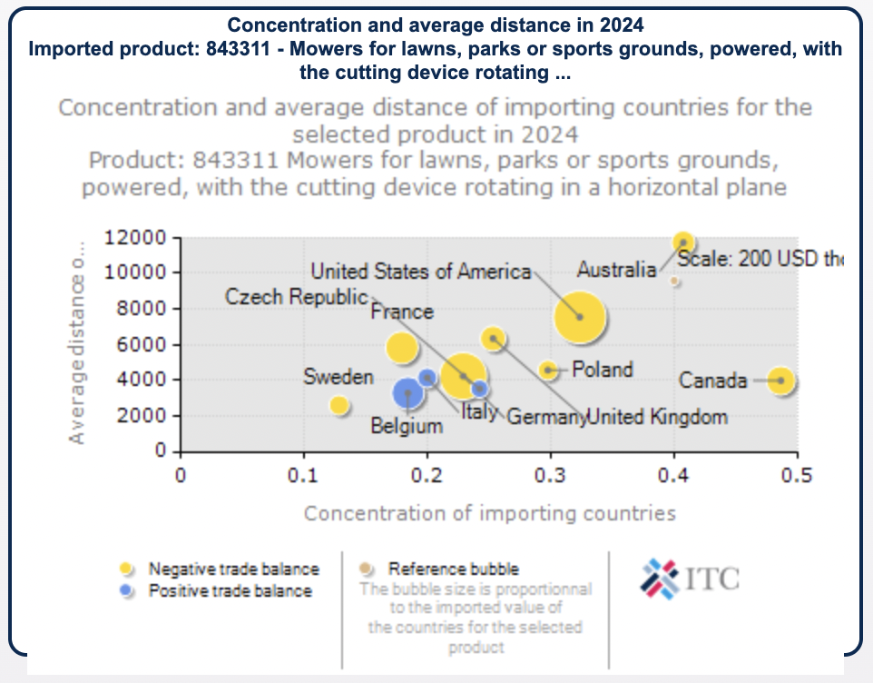
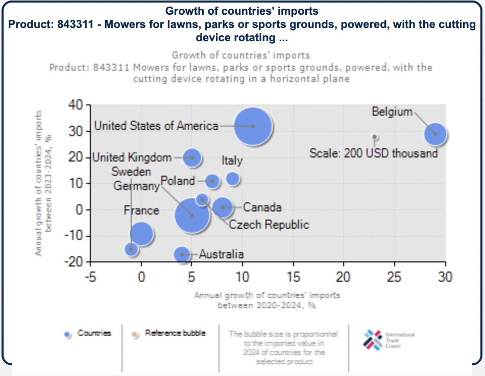

Estrategia de Internacionalización UMO 2027
Proyección UMO - Sillines de podadoras al mercado estadounidense.
Descripción del bien y/o servicio
Introducción técnica a la capacidad industrial de base, dimensionando componentes e infraestructura de exportación directa.
La empresa ofrece sillines para podadoras/lawnmowers, orientados al mercado agrícola estadounidense. Se trata de un producto que puede desarrollarse bajo diseños específicos, de acuerdo con los requerimientos del cliente. Estos productos pertenecen a la división de poliuretano inyectado, lo que representa la base tecnológica desde la cual la empresa está desarrollando esta línea de sillas. En cuanto a su composición, la estructura de la silla es nacional y está conformada por estructura metálica y estructura de madera, la tecnología de recubrimiento utilizada también es de origen nacional. Por otro lado, los componentes que actualmente provienen del exterior son los apoyabrazos y el cinturón de seguridad, los cuales son importados desde China. El producto tiene ciertas características, condiciones y exigencias técnicas que estas sillas deben cumplir en el mercado estadounidense.
Business Model Canvas
Socios Clave (Key Partners)
Actividades Clave (Key Activities)
Recursos Clave (Key Resources)
Relaciones con Clientes (Customer Relationships)
Propuesta de Valor (Value Proposition)
Canales (Channels)
Segmentos de Clientes (Customer Segments)
Estructura de Costos (Cost Structure)
Fuentes de Ingresos (Revenue Streams)
DPI - Diagnóstico de Potencialidades de Internacionalización
El DPI (Diagnóstico de Potencialidades de Internacionalización) es un instrumento corporativo matemático focalizado. Determina objetivamente la brecha organizativa interponiendo estándares macro con la realidad micro en planta, arrojando una puntuación contundente para decidir vías de ingreso seguro al mercado.
| Dimensión | Puntaje Obtenido | Puntaje Máximo | Estandarización 1 |
|---|---|---|---|
| Talento Humano | 0.013 | 0.125 | 0.108 |
| Direccionamiento Estratégico | 0.062 | 0.075 | 0.833 |
| Tecnología e Innovación | 0.062 | 0.150 | 0.416 |
| Sostenibilidad | 0.054 | 0.150 | 0.366 |
| Potencial de Internacionalización | 0.264 | 0.500 | 0.528 |
| Modos de Entrada | 0.142 | 0.300 | 0.473 |
Análisis Macro
Alta demanda focalizada en núcleos agrarios como Missouri (85,500 operaciones) y Oklahoma (69,700), integrando factores de cumplimiento con estándares SAE estables y alta competitividad fiscal reportada a nivel central.
Análisis Micro
Corporación estructurada en una robusta matriz de 57 años de trayectoria que oficia como proveedor maestro de líderes automotrices internacionales (Harley Davidson y Yamaha). En retrospectiva del factor talento, se revela un análisis profundo sobre la brecha técnica interdepartamental enfocada en el bilingüismo en el personal clave productivo.
Gráfico de Brecha: Obtenido vs. Máximo
Análisis de Viabilidad de Internacionalización
Justificación del producto en el contexto internacional
Análisis del sector en el país objetivo
Tamaño del mercado y tendencias


Análisis Competitivo del Sector
Análisis DOFA de la Empresa UMO
Diagnóstico transversal que categoriza los ejes orgánicos (virtudes y fricciones) expuestos perimetralmente sobre la exigencia técnica del entorno base en Estados Unidos.
Debilidades (D)
Oportunidades (O)
Fortalezas (F)
Amenazas (A)
Sostenibilidad - UMO Dimensiones
La evaluación de factores es un bastión innegociable. Este análisis integra estructuralmente los conceptos abordados dentro del 'Podcast sobre sostenibilidad' de la plataforma, acoplándolos operativamente a la matriz de importación estadounidense.
Económico
En la dimensión económica, la empresa UMO tiene una trayectoria larga que muestra buena estabilidad... Esto demuestra que tienen una base económica sólida necesaria para competir internacionalmente y en temas de crecimiento B2B (CEPAL, 2021).
Social
En la parte social, UMO es importante porque genera muchos empleos en el sector de autopartes, una de las grandes matrices de nuestra sociedad... Sin embargo, es necesario mejorar en temas de idiomas (como el inglés) para aprovechar mejor estas oportunidades en conjunto (OIT, 2022).
Ambiental
Finalmente, en la dimensión ambiental, se identifican elementos importantes como el uso de materiales industriales que requieren control y gestión responsable. La existencia de un departamento de calidad indica que la empresa realiza mediciones... Además, su intención de ingresar a mercados como el de Estados Unidos implica el cumplimiento de normativas ambientales más exigentes, lo que promueve prácticas más sostenibles (ISO, 2015).
Objetivo SMART
Meta definitiva diseñada matemáticamente conjugando la variable de potencial orgánico (DPI 0.457) con oportunidades geo-agrícolas centrales.
"Lograr la exportación y comercialización de un primer lote de 1,000 sillines con diseño personalizado para el mercado de distribuidores de maquinaria agrícola en los estados de Missouri y Oklahoma para diciembre de 2027, garantizando el cumplimiento de las normativas de seguridad y ergonomía locales."
Referencias Biográficas Formateadas (APA 7)
- Asociación Nacional de Empresarios de Colombia (ANDI). (2022). Informe del sector automotor en Colombia. https://andi.com.co
- Comisión Económica para América Latina y el Caribe (CEPAL). (2021). Desarrollo productivo y empleo. https://www.cepal.org
- Data Bridge Market Research. (2024). Gardening equipment market – Global industry trends and forecast to 2032. https://www.databridgemarketresearch.com
- Emergen Research. (2025, November 20). Lawn mower lithium battery market: Size, share, analysis and forecast to 2034. https://www.emergenresearch.com
- GRAMMER. (s. f.-a). GRAMMER USA home. https://usa.grammer.com/grammer-usa-home.html
- GRAMMER. (s. f.-b). Agricultural seating. https://usa.grammer.com/seating-solutions/agricultural-seating.html
- International Organization for Standardization (ISO). (2015). ISO 14001: Sistemas de gestión ambiental. https://www.iso.org
- International Trade Centre. (2024). Trade Map: Trade statistics for international business development. https://www.trademap.org/
- John Deere. (s. f.-a). Lawn mowers. https://www.deere.com/en/mowers/
- John Deere. (s. f.-b). Seats & cushions. https://shop.deere.com/us/Operator-Station/Seats-Cushions/c/6976/
- Kubota. (s. f.). Products. https://www.kubota.com/
- Ministerio de Ambiente y Desarrollo Sostenible. (2023). Gestión ambiental empresarial en Colombia. https://www.minambiente.gov.co
- Mordor Intelligence. (2026). Electric Lawn Mowers Market - Growth, Trends & Forecast (2026–2031). https://www.mordorintelligence.com/
- Organización Internacional del Trabajo (OIT). (2023). Empleo y desarrollo industrial. https://www.ilo.org
- ProColombia. (2023). Industria automotriz en Colombia. https://procolombia.co
- Seats Inc. (s. f.-a). Products. https://www.seatsinc.com/products/
- Seats Inc. (s. f.-b). Turf. https://www.seatsinc.com/products/turf/
- Seats Inc. (s. f.-c). I4M. https://www.seatsinc.com/products/turf/i4m/
- Tax Foundation. (2025). 2026 state tax competitiveness index. https://taxfoundation.org/
- TractorSeats.com. (s. f.-a). Tractor, lawn mower & construction seats. https://www.tractorseats.com/
- TractorSeats.com. (s. f.-b). Lawn mower seats. https://www.tractorseats.com/c-158-lawn-mower-seats.aspx
- TractorSeats.com. (s. f.-c). Turf seat kits.
- U.S. Consumer Product Safety Commission. (2024). Safety guidelines for agricultural ride-on equipment. https://www.cpsc.gov/
- U.S. Department of Agriculture, National Agricultural Statistics Service. (2025). 2025 State agriculture overview: Missouri y Oklahoma. https://www.nass.usda.gov/
- UMO Group. (s. f.). Quiénes somos. https://umo.com.co/quienes-somos/
- Zhongshen. (2023). US garden tools market 2023. https://www.sh-zhongshen.com/es/hardware-tools/